История вина
Имя изобретателя вина, увы, науке неизвестно, как и место, где впервые было сделано вино. Бытуют утверждения, что первое вино появилось на Древнем Востоке. Одни говорят, что вино появилось в Финикии, другие - что в Ассирии, в Междуречье. Есть очень много легенд на тему появления первого вина. А первое упоминание о вине в литературе можно найти в Библии, в книге "Бытие", в эпизоде про Ноя, когда тот выпил вина, захмелел, и уснул в непристойной позе, а его сын Хам увидел это и осмеял его.
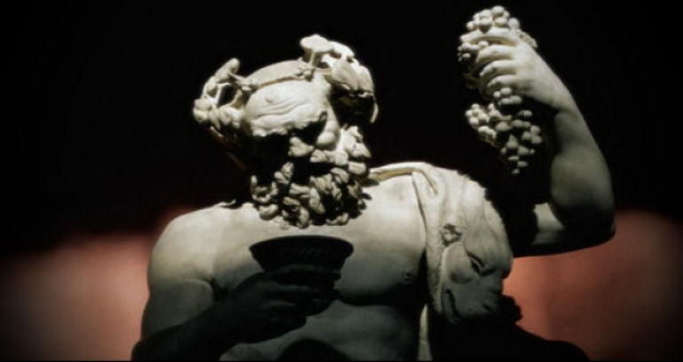Не будем вникать в ненужные споры, скажем только, что в древнем мире вино было очень популярно, например, в Древней Греции и Риме. Вино в то время являлось практически единственным спиртным напитком, за исключением пива, т.к. археологи, изучив древнеегипетские папирусы, пришли к выводу, что в те времена уже был известен рецепт пивоварения. Первое вино было получено в результате банальной человеческой ошибки (впрочем, как и многие другие изобретения). Кто-то в древние времена нарвал винограда, надавил из него сока и "благополучно" про него забыл. Через некоторое время этот человек вспомнил про забытый сок, нашел ту самую "емкость" с ним и попробовал его. Как вы понимаете, за это время виноградный сок успел перебродить. Человеку понравилось, он угостил друзей. Те, видимо, спросили его, как он это сделал. Тот ответил, что сам не знает, просто оставил виноградный сок на некое время, а когда пришел за ним - там было "вот это". Не претендую на правдивость этой легенды, но более, чем вероятно, что именно так и было получено первое вино.
Первые культурные сорта винограда были завезены и высажены в Древней Элладе финикийцами. Так исторически сложилось, что Греция климатически занимала очень выгодное положение для производства вин. Здесь появились первые приёмы агротехники выращивания винограда и технологии виноделия. Процесс приготовления вина у древних греков сильно отличался от современной технологии. Плоды винограда давили голыми ногами в деревянных емкостях или в корзинах из камыша, обмазанных глиной. Простейший пресс представлял собой длинный мешок, внутрь которого клали виноград. Один конец мешка привязывали к вертикальной стойке, а другой конец крутили палкой до полного выдавливания жидкости. Качество вина определялось подбором винограда.
После нескольких дней брожения вино ставили на огонь и выпаривали до консистенции сиропа, после чего разбавляли водой (иногда морской) и добавляли разные ароматные вещества. Чтобы сохранить качества будущего вина во время брожения сусла, добавляли толченый мрамор, мел, соль или мирру (ароматическую густую смолу тропических деревьев, произрастающих на побережье Красного моря).
Когда процесс брожения прекращался, вино разливали в глиняные осмоленные сосуды, поскольку смола лучше сохраняла вино. Емкости были разного объема: сосуды, вмещавшие 150 литров, назывались «пифосы». Амфоры вмещали 40-75 литров, а для удобства переноски на корпусе делали ручки в виде ушек. Вино хранили и в кожаных сумках-бурдюках. После естественного выпаривания воды из бурдюков некогда жидкое вино превращалось в тягучий мед, который перед употреблением смешивали с горячей водой. Аристотель писал, что в Аркадии вино так долго выпаривали, что оно становилось смолянистым и тягучим. Чтобы вытащить его из кожаных мехов, брали ножи и соскабливали его со стенок. А в Древнем Риме амфоры, залитые вином, подвешивали у огня и непрерывно выпаривали до превращения жидкости в сухую массу. Такой способ обработки вина назывался furmarium. Перед употреблением сухой экстракт разводили в воде, а затем процеживали либо давали отстояться. Вино разбавляли нечетной частью воды: например, 1 к 5, после чего разливали в большие плоские чаши.
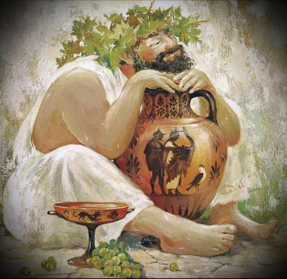Первые культурные сорта винограда были завезены и высажены в Древней Элладе финикийцами. Так исторически сложилось, что Греция климатически занимала очень выгодное положение для производства вин. Здесь появились первые приёмы агротехники выращивания винограда и технологии виноделия. Процесс приготовления вина у древних греков сильно отличался от современной технологии. Плоды винограда давили голыми ногами в деревянных емкостях или в корзинах из камыша, обмазанных глиной. Простейший пресс представлял собой длинный мешок, внутрь которого клали виноград. Один конец мешка привязывали к вертикальной стойке, а другой конец крутили палкой до полного выдавливания жидкости. Качество вина определялось подбором винограда.
После нескольких дней брожения вино ставили на огонь и выпаривали до консистенции сиропа, после чего разбавляли водой (иногда морской) и добавляли разные ароматные вещества. Чтобы сохранить качества будущего вина во время брожения сусла, добавляли толченый мрамор, мел, соль или мирру (ароматическую густую смолу тропических деревьев, произрастающих на побережье Красного моря).
Когда процесс брожения прекращался, вино разливали в глиняные осмоленные сосуды, поскольку смола лучше сохраняла вино. Емкости были разного объема: сосуды, вмещавшие 150 литров, назывались «пифосы». Амфоры вмещали 40-75 литров, а для удобства переноски на корпусе делали ручки в виде ушек. Вино хранили и в кожаных сумках-бурдюках. После естественного выпаривания воды из бурдюков некогда жидкое вино превращалось в тягучий мед, который перед употреблением смешивали с горячей водой. Аристотель писал, что в Аркадии вино так долго выпаривали, что оно становилось смолянистым и тягучим. Чтобы вытащить его из кожаных мехов, брали ножи и соскабливали его со стенок. А в Древнем Риме амфоры, залитые вином, подвешивали у огня и непрерывно выпаривали до превращения жидкости в сухую массу. Такой способ обработки вина назывался furmarium. Перед употреблением сухой экстракт разводили в воде, а затем процеживали либо давали отстояться. Вино разбавляли нечетной частью воды: например, 1 к 5, после чего разливали в большие плоские чаши.
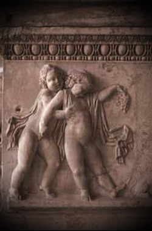В Х веке до н.э греки захватывали в своих походах большие территории Средиземноморья. На завоёванных землях они высаживали культурные сорта винограда и продолжили историю греческого вина. Первый сорт назывался Vitis Vinifera – благородная лоза. Античных греков восхищал мягкий климат Италии и земли, прекрасные для выращивания виноградников. Всё это способствовало благоприятному развитию виноградарства и получению продукта исключительного качества. Греки называли Италию Эретрия - «земля вина» и «земля увешанная виноградом». Первыми учениками - виноградарями стали сицилийцы, они быстро освоили технологию выращивания лозы и постепенно стали распространять её на север. В Италии, до пришествия греков, виноделием занимались этруски. Объединив исторический опыт выращивания винограда греками и традиции изготовления вина этрусками, римляне добились новых технологий и улучшили качество продукта.
В VII веке до нашей эры, греками был основан, на территории государства Галлии - ныне Франции, город Массалия - ныне Марсель. Они обучили местное население уходу за виноградниками, преподавали азы виноделия и научили галлов разбираться в винах и их качестве. Уже появились первые попытки классификации не только винограда, но и напитков получаемых при его обработке. Надо заметить, что хранение в дубовых бочках придумано было именно галлами.
Историческое присоединение галльских земель к Римской Империи Юлием Цезарем в конце II века до н. э, изменило жизненный уклад жителей. Римляне стали пропагандировать свои сорта винограда и внедрять технологию выращивания. Галлия стала – винным краем - метрополией, на её территории образовалось десятки городов, которые процветают до нынешнего времени (Орлеан, Леон, Бордо, Тур).
После распада Римской империи производство винограда и вин в Галлии было в упадке. Если южные соседи заставили полюбить веселящий напиток и научили его производству, то германские племена уничтожили плантации и разорили винные погреба. Спасло виноделие монашество, при проведении католических месс, причастие делалось вином. Монахи оставили на территории своих монастырей небольшое количество растений и постепенно стали скупать земли Бордо, Бургундии, Шампани, рассаживая виноград.
Виноградники Бургундии заслуживают отдельного упоминания. Известно, что в 7 веке они были в Оксере, а лучшие бургундские вина появились еще раньше. В 6 веке летописец Григорий Турский отмечал, что западнее города Дижона на горах произрастают виноградники, из которых делают вино, не уступающее своим благородством Фалернскому. Знатные особы Бургундии занимались разведением виноградников и гордились, что в государстве производят самые лучшие вина в мире. Тем более, в 14-15 веке Бургундия стала самой влиятельной европейской державой.
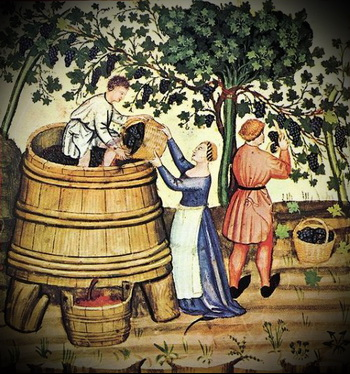Производством вина и выращиванием винограда особенно активно занимались монахи ордена святого Бенедикта из монастыря в Клюни и монахи из аббатства Сито. Однако в 19 веке бордосские вина стали цениться выше бургундских, а в середине 19 века чуть было не поставили крест на виноделии в Европе. Дело в том, что из Америки завезли филлоксеру (тля уничтожающая корень лозы), которая загубила почти все виноградники. Долго невозможно было найти способа борьбы, ситуацию спасло подвой – скрещение корней американской дикой лозы с европейскими сортами винограда. Кора дикой лозы толще и филлоксера не может прогрызть её. С большим трудом восстановились виноградники. Вторая Мировая война нанесла еще один сильный удар по виноделию Бургундии. Бомбардировки и отходы танкового горючего оставили неизгладимые шрамы на плодородной почве провинции. Но красные вина Гран-Крю, Кло-де-Вужо, Премьер-Крю и отдельные белые плоскорогих животных Шампанское появилось благодаря монаху по имени Дом Пьер Периньон из аббатства, расположенного в центре Шампани. Современники отмечали, что Дом Периньон имел чрезвычайно тонкий уникальный вкус и отличную память. Попробовав свежую виноградину, он безошибочно определял сорт, место произрастания и особенности терруара. Вкус винограда мог сказать ему о качествах будущего вина. Периньон готовил великолепные белые вина из ягод черных сортов и, по словам современников, он «добился чрезвычайной прозрачности, невиданной до сих пор». Основной вклад Дома Периньона в виноделие – это разработка технологии производства игристых вин. Этому открытию предшествовал кропотливый подбор сортов винограда для шампанизации, а также появление ликера, без которого процесс шампанизации был бы неосуществим. Специально для нового вина была разработана другая емкость – вместо хрупких «пузатых» бутылок появилась знакомая нам форма «шампанской» бутылки с толстыми стенками, а вместо промасленной пакли стали использовать корковую пробку.
Согласно легенде, классические бокалы для сладкого шампанского изготавливались по форме и размеру груди королевы Франции Марии-Антуанетты (казнённой революционерами в 1793 году) или другой известной французской аристократки. Эти бокалы соответствуют размеру «В» по международной классификации размеров женских бюстов и объёму в 200 мл согласно метрической системе. Однако данная легенда почти определённо неверна: данный бокал был разработан для шампанского в Англии в 1663 году — то есть более чем на век раньше.
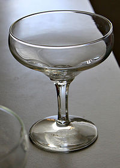Вино пили из кубков, представлявших собой настоящие шедевры ручной работы. Так, свадебные кубки состояли из двух частей, соединенных в одну конструкцию, что символизировало единство и общность в браке. Самому богатому и знатному гостю давали самый прекрасный и дорогой кубок, который часто изготавливали из горного хрусталя. Германцы считали этот минерал символом Богородицы, а у некоторых других народов существовало поверье, что хрустальный бокал мог распознавать яд, покрываясь матовой дымкой. А еще верили, что янтарь, брошенный в вино, становится пепельно-белым. В Средние Века часто делали рога для спиртных напитков из слонового бивня, оправленного золотом и серебром и украшенного драгоценными камнями. Такие дорогие изделия назывались ритонами.
В 17 веке, то есть в начале Эпохи Возрождения, технология винной бутылки была отработана до мелочей. Виноделы постепенно отказывались от хранения вина в бочках и переходили на бутылки, к тому же под стеклом аромат напитка приобретал особый колорит. Сначала горлышко бутылки запечатывалось смолой или воском, и на этом мягком материале производитель ставил свою фамильную печать. Позднее стал использоваться сургуч, а затем и пробка, для извлечения которой практически одновременно изобрели штопор.
История посуды для вина
О жизни людей несколько тысячелетий назад учёные судят лишь по редким находкам, дошедшим до наших дней благодаря долговечности материала. Сколько возможных вариантов упаковки бесследно ушло в небытие, остаётся только догадываться. Если представить доступные материалы в то время, то можно предположить, что первые ёмкости были животного происхождении, то есть, из желудков и других полостей животных и рыб.
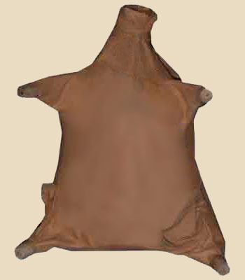Они были легкодоступны, и люди без сомнения использовали их для воды, молока и вина. Но как ни просушивай такой курдюк, как ни вычищай, вода через несколько дней будет несвежей, молоко скисать, а вино портиться. Таково свойство курдюков, которые подходили лишь для кратковременных путешествий или бытового использования. Несомненно, что отношение к вину в те времена было иным, ведь не существовало упаковки, фиксирующей и сохраняющей все достоинства вина. Не случайно в древних языках есть слово «вино», но нет слов, обозначающих сортовые различия. Всё вино, попадающее в кожаный бурдюк, становилось просто вином.
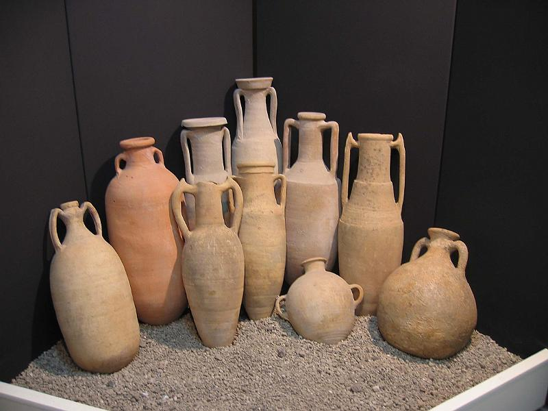Первой по-настоящему эффективной упаковкой для вина можно считать глиняные сосуды – амфоры (лат. amphora, греч. amphoreus – сосуд с двумя ручками). Первые амфоры появились задолго до появления письменности на Земле и к 18 веку до нашей эры приняли свою классическую форму: вытянутый кувшин с острым дном, узким горлом и двумя ручками по бокам. В северной части Ирана были найдены остатки кувшина, на дне которого учёные обнаружили следы вина. Вино было законсервировано в кувшине 7000 лет и за столь долгое время окаменело.
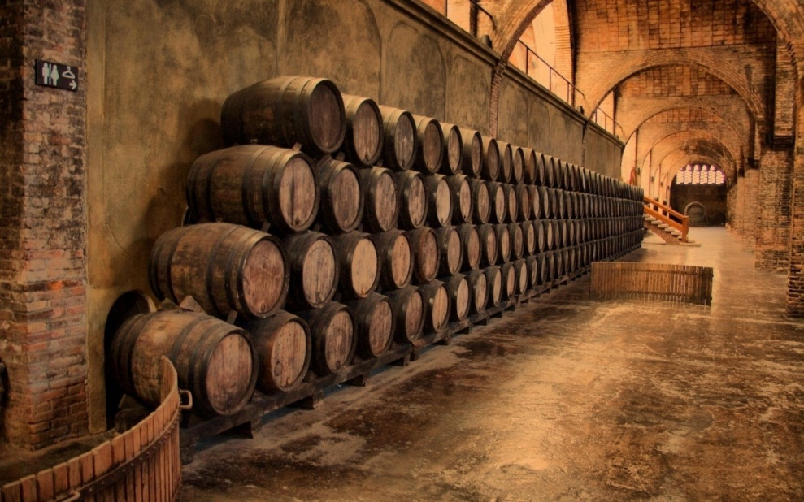Классическая амфора была ёмкостью около 30 литров, имела остроконечное дно и предназначалась для перевозки по морю.
Вторым по популярности материалом для хранения вина было дерево. Ёмкости из дерева не хуже глины сохраняли вино, а дубовые даже делали его лучше. В средние века деревянная бочка становится основной тарой, а виноделы используют главный эффект дерева – способность облагородить напиток за счёт содержащихся в древесине дубильных веществ. Именно дубовой бочке мы обязаны появлением коньяка и портвейна. Деревянные ёмкости до сих пор незаменимы при производстве дорогих спиртных напитков. Ничто не может заменить древесину дуба, но как тара бочка уступила своё место более практичному и нейтральному стеклу.
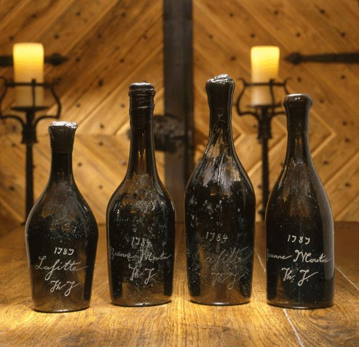В середине 17 века в Англии продавалось бесчисленное количество патентованных лекарств, эликсиров и пилюль именно в стеклянных бутылочках. Новая упаковка делала эти малоэффективные зелья привлекательными для покупателей, что навело виноторговцев на совершенно логичные выводы. Вино стали разливать в большие бутылки и наклеивать этикетки точно так же, как наклеивали их аптекари на свои бутылочки. Это был верный ход. Вино ассоциировалось у покупателей с хорошим самочувствием и настроением. Этот намёк на панацею перевел напиток из повседневного в разряд элитного и желаемого. В 1824 году была опробована технология изготовления стекла под прессом, а в конце 19 века Майклом Оуенсом изобретена машина по изготовлению стеклянных бутылок. С тех пор дешёвая и практичная стеклянная упаковка стала стандартом для вина.
Старинные сосуды для вина
Застолье во все времена было неотъемлемой частью любого праздника. Праздничный стол был местом задушевного общения и принятия важных решений. Практически все значимые события в жизни: сватовство, свадьба, именины, крестины, приезд дорогих гостей, заключение серьезных сделок сопровождались застольем.
Изначально для вина использовали ковши, которые изготавливали в основном из дерева или серебра, иногда из золота и украшали росписью и драгоценными камнями.
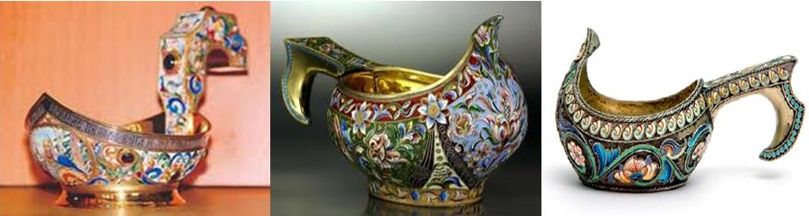Рог для вина использовали многие европейские народы. Особенно распространены они были в античном мире, в древних кельтском и германском обществах, а также народов Кавказа. Как правило их изготавливали из рогов плоскорогих животных, и иногда украшали драгоценными металлами и камнями. Древние греки изготавливали специальные керамические сосуды – ритоны, стилизованные под рога животных. Рог для вина как сосуд сохранился до наших дней, но сейчас больше используется как оригинальный сувенир, чем по прямому назначению.
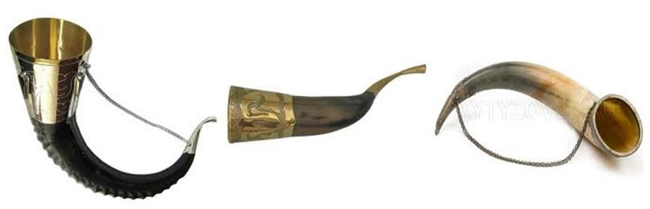Во второй половине 17 века на смену ковшам пришли чарки, кубки и братины.
Чарки были самых разнообразных форм, иногда имели поддон или шаровидную ножку. Их украшали чернью, эмалью или чеканкой. Она являлась русской единицей объема жидкости и применялась до введения единой метрической системы мер. 1 чарка равнялась 1/100 ведра или двум шкаликам (61,5 мл). В пересчете на современную систему мер 1 чарка составляла – 0,12299 литра (123 мл).
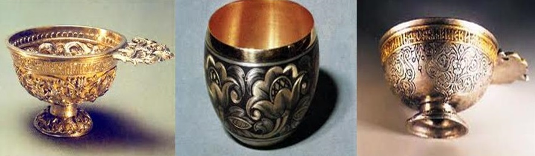Кубок - сосуд для вина, состоящий из 4 основных частей: пойло, тулово, стоян, поддон. Чаще всего был металлический, но иногда изготавливался из стекла или кости и украшался орнаментом и драгоценными камнями. В средние века существовала традиция подносить победителю рыцарских турниров кубок вина. Этот обычай сохранился до наших дней, и начиная с середины 19 века кубки стали вручать в качестве приза победителям различных соревнований.
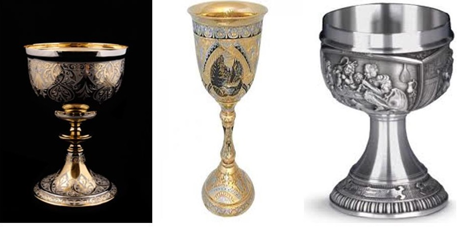Братина – сосуд шарообразной формы на невысоком поддоне. Его обычно пускали по кругу, каждый гость должен был пригубить вино и передать братину своему соседу. Этот обряд сближал сотрапезников и подчеркивал их доверие к хозяину, который по традиции первым пробовал вино, демонстрируя, что оно не отравлено.
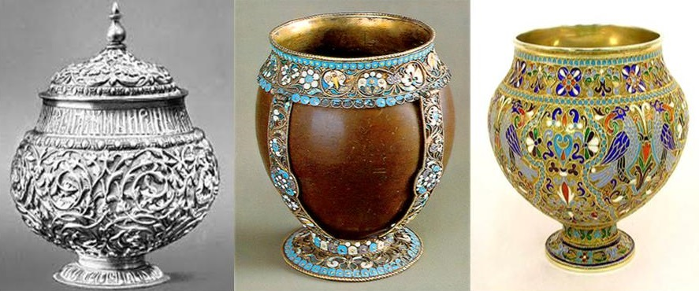Технология производства производство белых вин
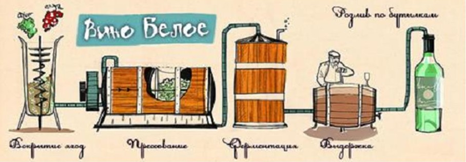Сбор
Сорта винограда с красной или белой кожицей.
Белый виноград окисляется быстрее, сбор должен занимать не более 3-х часов, поэтому его чаще всего собирают машинным способом. Отбор, селекция винограда.
Отжим
Для сортов с белой кожицей нужен мягкий отжим, чтобы избежать в вине резких травянистых и горьковатых ноток. Сорта с красной кожицей необходимо быстро отжать, чтобы сок не окрасился.
Ферментация
При низких температурах (18–20°C) в течение 10–14-и дней. Если вино должно сохранить свежий характер и высокую кислотность проводят только алкогольную ферментацию. Если хотят сделать вино на много тельным, маслянистым и менее кислотным, проводят яблочно-молочную (малолактическую) ферментацию.
Выдержка
- в стали (для сохранения свежести и сортовых ароматов)
- в дубовых бочках (для придания дополнительных ароматов и более плотной маслянистой структуры)
- на осадке – sur lie (сюр ли)
Фильтрация
Пропускание вина через крупный фильтр (чаще всего бумажный). Отсутствие фильтрации порождает выпадение натурального осадка, что не очень эстетично в белых винах.
Розлив
Розлив по бутылкам
Производство красных вин
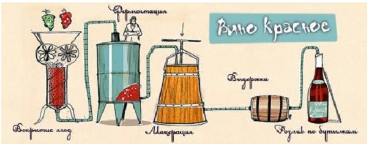Сбор
Машинным способом или вручную. Отбор, селекция винограда.
Дробление и гребнеотделение
Ягоды не давят, а дробят, высвобождая сок. Отделение гребней, в которых содержится большое количество жестких танинов, от ягоды.
Мацерация
Настаивание сока на кожице (мезге) для извлечения цвета, насыщения танинами, полифенолами, получения структуры.
Ферментация
При температурах 30–35°C, при которой сахар трансформируется в алкоголь, а также малолактическая (яблочно-молочная, для красных обязательна), при котором резкие яблочные кислоты переходят в более мягкие молочные.
Отжим
Часть вина после ферментации сливают самотеком, мезгу дожимают. Самотек и вино из-под пресса могут ассамблировать.
Выдержка
- в стали (для сохранения свежести и сортовых характеристик винограда)
- в дубовых бочках (для придания дополнительных ароматов и более плотной структуры)
Снятие с осадка
При выдержке красного вина некоторые вещества выпадают в осадок, от которого нужно избавляться.
Фильтрация
Осветляют и фильтруют красные вина не всегда, по желанию винодела.
Розлив
Розлив по бутылкам.
Классификация вин
Классификация по используемому сырью
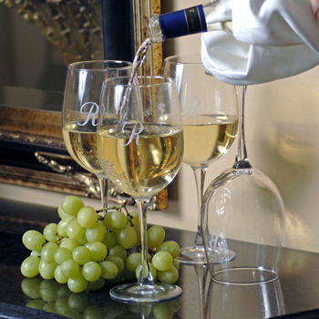Вино (лат. vinum) — алкогольный напиток (крепость 9—20 % об.), получаемый полным или частичным спиртовым брожением виноградного или плодово-ягодного сока (иногда с добавлением спирта и других веществ). Проблема классификации вин совсем не так проста, как может показаться на первый взгляд. Дело в том, что их группировка может проводиться по целому ряду параметров. По продукту, подвергшемуся брожению, вина делятся на:- виноградные (из чистого виноградного сока);- плодовые (из сока яблок, груш и т. д.);- ягодные (из сока ягод лесных и садовых, а также из - косточковых плодов: вишен, слив, абрикосов, персиков и т. п.); - растительные (из сока арбузов, дынь, огородных - растений, из цветочных лепестков, сока деревьев);- изюмные (из вяленого или сушеного винограда). На сегодняшний день большинство энологов (специалистов по виноделию) сходятся на том, что вином следует именовать только те алкогольные напитки, которые изготовлены из винограда. Напитки, для изготовления которых сырьем послужили плоды, ягоды и прочее, вином называться не могут. Впрочем, эта позиция подвергается критике.
Классификация вина в зависимости от цвета
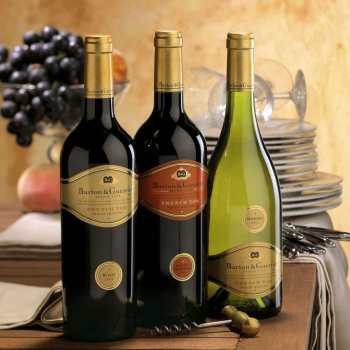Самая простая классификация, которая понятна и доступна всем - это классификация в зависимости от цвета. Итак, различают белые, розовые и красные виноградные вина. Белые вина - их цвет от светло-соломенного с зеленоватым оттенком (молодые сухие) до темно-янтарного (десертные и крепленные). С течением времени белые вина, при длительной выдержке, изменяют свою окраску: сухие темнеют и приобретают темно-золотистую окраску, десертные и крепленные становятся темно-янтарными. Белое вино изготавливается, по большей части, из "белых" сортов винограда. Но иногда оно делается и из "черных", именуемых также "красными", сортов винограда. Цвет ягод этих сортов колеблется от красного до иссиня-черного. Для изготовления белых вин из цветного винограда с ягод предварительно снимают кожицу, которая и содержит красящие вещества. Розовые вина – окраска от светло-розового, телесного до темно-розового, светло-рубинового. Розовые вина изготовляются из "черного" винограда, но нередко и из смеси "черного" и "белого" разных сортов. При этом используется винодельческая технология, характерная для изготовления белых вин.
Красные вина – их цвет от темно-рубинового с фиолетово-сизоватым оттенком (молодые) до темно-гранатового с коричневато-кирпичным оттенком в тонком верхнем слое (возрастные). При длительной выдержке интенсивность окраски красных вин снижается и возрастные вина всегда светлее молодых.
Количество сортов, видов, подвидов и марок вина неуклонно растет в геометрической прогрессии с момента появления легендарного напитка на свет. Дабы как-то упорядочить это информационное пространство, не запутаться самим и не запутать других, а также не позволить драгоценной винной культуре превратиться в хаос, люди еще в древние времена сообразили ввести систему классификации. Но критериев, по которым классифицируются вина, тоже, мягко говоря, немало. Более того, практически каждая страна-производитель имеет собственную классификационную систему.
Классификация виноградного вина в зависимости от сырья
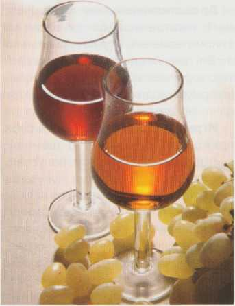Виноградное вино - алкогольный напиток, получаемый полным или частичным сбраживанием виноградного сусла (сока), виноградной мезги (смесь сока, гребней и дробленых ягод) и целых ягод, крепость которого должна составлять не менее 8,5 % об. Специальные вина приготавливаются с добавлением этилового спирта и ряда других веществ, разрешенных к применению винодельческим законодательством. Полная классификация применима именно к виноградным винам, так как остальные вина (плодовые или растительные) изготавливаются обычно кустарно или небольшими производственными количествами. Виноградные вина подразделяются на односортовые, если их готовят из одного сорта винограда, и многосортовые, если в их состав входят несколько сортов. При производстве односортовых вин допускается использование не более 15% винограда или виноматериалов из других сортов. Мнoгocopтoвыe вина по способу приготовления бывают ceпaжными и купaжными. Сeпaжныe приготавливаются из винограда, поступающего на переработку в виде смеси сортов в определенных соотношениях (брожение вместе нескольких сортов). Купaжныe приготавливаются смешиванием уже готовых виноматериалов (сорта сбраживаются по отдельности).
Классификация вина в зависимости от качества и сроков выдержки
Все вина в зависимости от качества и сроков выдержки делятся на две группы: ординарные и высококачественные.
Началом срока выдержки считают 1 января, следующего за урожаем винограда года. Ординарные вина (обыкновенные, типичные) - это вина, вырабатываемые из разных сортов винограда. Для таких напитков произрастание винограда регионально не регламентируется. Вина производятся по общепринятой технологии. Они долго не хранятся, и их реализация как правило осуществляется не позднее, чем через шесть месяцев после закладки его на хранение. Ординарные вина, в зависимости от сроков реализации, делятся на:
- Молодые вина - натуральные столовые вина, реализуемые до 1 января следующего за урожаем винограда года.
- Вина без выдержки - получают так же, как и молодые, но реализуют после 1 января следующего за урожаем винограда года.
Высококачественные вина – это улучшенные по качеству вина, которые производятся в наиболее благоприятные для созревания винограда года. Они получаются из определенных высококачественных сортов винограда, причем произрастание винограда регионально регламентируется. При сборе винограда обязательно производится тщательный контроль и отбор сырья по качеству сахаристости и сортовому составу, и оно перерабатывается в месте сбора урожая.
Вина производятся по традиционным или специальным технологиям. Особенностью технологии является их длительная выдержка в крупных (металлических цистернах или дубовых бочках) или мелких (стеклянных бутылках) емкостях, в результате чего существенно повышаются их органолептические свойства. Эти вина характеризуются постоянным, высоким качеством, сохраняющимся из года в год. Спиртуозность (крепость) должна составлять не менее 10 % об.
В зависимости от сроков выдержки и используемых для этого емкостей, высококачественные вина подразделяются на 3 группы:
- Выдержанные вина - улучшенного качества с обязательной выдержкой в крупных стационарных емкостях перед розливом в бутылки не менее 6 месяцев (считая с 1 января следующего за урожаем года).
- Марочные вина - высокого качества, продолжительность выдержки которых в крупных стационарных емкостях должна быть не менее 1,5 года для марочных столовых вин и не менее 2 лет для марочных крепких и десертных вин (считая с 1 января следующего за урожаем года).
- Коллекционные вина - лучшие марочные вина, которые после окончания срока выдержки в дубовой таре или металлических резервуарах дополнительно разливаются в бутылки и выдерживаются в специальных условиях энотек не менее трех лет.
Некоторые вина, получаемые в определенных винодельческих регионах, отличаются необыкновенными аромато-вкусовыми свойствами. вследствие этого, в виноделии появилась необходимость выделить такие вина в отдельную категорию вин «с контролируемым наименованием по происхождению». К винам с контролируемым наименованием по происхождению относят напитки высокого качества, отличающиеся оригинальными органолептическими свойствами. В названии таких вин обязательно указывают наименование местности, в которой собирается виноград и производятся эти вина. По законодательству, подобные напитки нигде более не имеют право производиться.
Классификация по содержанию спирта и сахара
Согласно российским стандартам, по содержанию этилового спирта и сахара вина подразделяются на:
Натуральные:
- Сухие — вина, приготовленные путём полного сбраживания сусла с остаточным содержанием сахара не более 1 % (спирт — 9-13 % об., сахар — до 3 г/л).
- Сухие особые (спирт — 14-16 % об., сахар — до 3 г/л).
- Полусухие (спирт — 9-13 % об., сахар — 5-30 г/л).
- Полусладкие (спирт — 9-12 % об., сахар — 30-80 г/л).
Специальные (то есть креплёные):
- Сухие (спирт — 14-20 % об., сахар — до 15 г/л).
- Крепкие (спирт — 17-20 % об., сахар — 30-120 г/л).
- Полудесертные (спирт — 14-16 % об., сахар — 50-120 г/л).
- Десертные (спирт — 15-17 % об., сахар — 140—200 г/л).
- Ликёрные (спирт — 12-16 % об., сахар — 210—300 г/л).
- Ароматизированные (спирт — 16-18 % об., сахар — до 6-16 %).
Столовые сухие вина получают путем полного сбраживания виноградного сока. Весь сахар, содержащийся в нем, сбраживается дрожжами. Характерная особенность сухих столовых вин — невысокое содержание спирта (10-12%) и почти полное отсутствие сахара (0,2-0,5%).
- Столовые полусладкие вина содержат 9-14% спирта естественного брожения, 3-8% сахара. Относятся к категории ординарных вин. Существуют белые, розовые, красные полусладкие вина. Полусладкие вина готовят по двум технологическим схемам: а) сбраживанием сусла на мезге или без нее с остановкой брожения при достижении нужных кондиций по сахару; б) купажированием сухих и сладких виноматериалов.
- Столовые полусухие вина содержат 9-14% спирта естественного брожения и 0,5-3% сахара. Вырабатываются из тех же сортов винограда, по тем же технологическим схемам, что и полусладкие вина, но с остановкой брожения при достижении соответствующего содержания сахара. Существуют белые, розовые и красные полусухие вина.
- Крепленые вина приготовляют с использованием спирта. По содержанию спирта крепленые вина подразделяются на крепкие и десертные (содержат 12-17% спирта). Выпускаются белые, розовые и красные ординарные и марочные крепленые вина.
- Крепкие вина содержат 17-20% спирта. По содержанию сахара крепкие вина подразделяются на сухие (1-3%) и полусладкие (5-12%). Для приготовления крепких вин используются сорта винограда с более высоким содержанием сахара и высокой экстрактивностью сока. Крепкие вина должны содержать не менее 3% спирта естественного брожения. К этой группе вин относятся портвейн, мадера, марсала, херес. Крепкие вина могут быть ординарные и марочные.
- Десертные вина содержат 12-17% спирта и 2-35% сахара. Объемная доля спирта естественного брожения в десертных винах должна составлять не менее 1,2%. По концентрации сахара они подразделяются на десертные полусладкие 25-12% сахара, 14-16% спирта, сладкие 14-20% сахара, 15-17% спирта и ликерные 21-35% сахара, 12-17% спирта. Высококачественные десертные вина изготовляются из винограда с содержанием сахара 22-35%. Однако не каждый сорт винограда и не каждый год может накапливать такое количество сахара. Добавление спирта-ректификата позволяет использовать виноград с меньшей сахаристостью (не менее 20%).
Ароматизированные вина (вермут) изготовляют из виноградных виноматериалов путем добавления 1 -2% специального настоя трав, цветов, кореньев, в том числе и полыни («вермут» в переводе с немецкого означает «полынь»).
Другие классификации
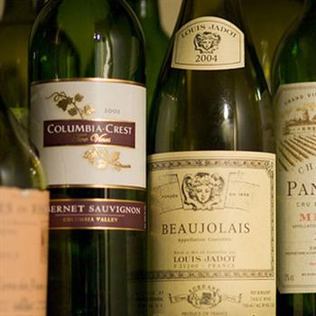Также существует отдельная классификация по содержанию спирта и содержанию сахара.
Классификация вина в зависимости от содержания углекислоты.
Один из главных признаков вин - содержание в них углекислоты. По этому критерию виноградные вина делятся на две большие группы: тихие – не содержащие углекислоту или содержащие ее в незначительном количестве; игристые или шипучие – имеющие СО2 в избытке.
Вина, содержащие избыточное количество углекислоты, делятся на: искусственно насыщенные углекислотой – газированные, насыщенные углекислотой путем первичного брожения – натуральные игристые и насыщенные углекислотой путем вторичного брожения – игристые, произведенные классическим методом (брожение в бутылках) и игристые, произведенные традиционным методом (брожение в крупных герметически закрытых резервуарах).
Существует ещё классификация по содержанию кислоты.
Так, выделяют:
- пресные (содержат очень мало кислоты и имеют слабовыраженный вкус);
- средние (содержат кислоты не много и не мало, что придает напитку, если так можно выразиться, "среднестатистический" винный вкус);
- кислые и терпкие (отличаются очень кислым, сильно вяжущим терпким вкусом).
Кстати, мутность вина - не дефект. Классификация вин по этому признаку следующая:
- мутные (имеют тонкую муть, трудно оседающую или, наоборот, крупную муть, легко оседающую на дне стакана);
- тусклые (с едва заметной мутью, не имеющие блеска);
- прозрачные (с особым блеском и яркостью).
В настоящее время во Франции принята общенациональная классификация вин, согласно которой все вина делятся на 4 категории по уровню качества. Издавна во Франции были самые строгие системы и законы, касающиеся производства вина и выращивания винограда. Основа современной классификации была заложена в 1935 году, когда был принят ряд законов, регламентирующих виноделие. На основе этих законов была установлена Appellation d’Origine Controlee – система контроля наименований по происхождению.
VDT (vin de table) – столовые вина. Это первая, самая низкая ступенька. Для производства этих вин может быть использован виноград, собранный с различных виноградников и урожаев различных лет. Допускается добавление в сусло сахарного сиропа для обеспечения крепости не менее 8.5-9.0 %об. алкоголя. Год урожая и точное место производства на этикетке столовых вин не отображается. Можно сказать, что эти вина не заслуживают особого внимания, все они невыразительные, с отсутствующей индивидуальностью. В хороших ресторанах не принято включать такие вина в свои винные карты.
VDP (vin de pays) – местные вина. Эти вина стоят на следующей, более высокой ступеньке качества. Местные вина должны производиться из регламентированных сортов винограда, иметь определённую крепость и обладать установленными органолептическими характеристиками. Виноград для этих вин должен быть выращен на строго определённой территории. Во Франции насчитывается около 150 местностей, имеющих право производства местных вин.
AOVDQS (VDQS) (Appellation d’Origine Vin Délimité de Qualité Superieure) – делимитированные (марочные) вина высшего качества. Производство этих вин строго регламентировано и контролируется специальными организациями. Вина должны отвечать ряду жёстких требований – определённая зона производства, привязанная к региону, использование регламентированных сортов винограда, определяется максимальная урожайность с гектара и методы возделывания, предъявляются определённые требования к методам винификации, крепости вина и органолептическим характеристикам. Вина этой категории составляют порядка 2% всего объёма производства вин во Франции и являются во многом переходной категорией к следующей, более высокой.
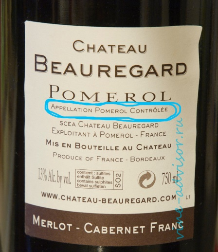AOC (Appellation d’origine contrôlée) — вина контролируемых наименований по происхождению. В этой классификации — это высшая категория французских вин. Примерно 35% вин, производимых во Франции, относятся к этой категории. Предъявляемые требования к винам AOC более жёстки, чем к винам VDQS – определяется и возраст лоз, и тип почвы, и цвет производимого вина и т.п. Основную роль играет понятие апеллясьона (это слово буквально можно перевести как ”наименование”). Его можно определить как регламентационную систему, которая гарантирует подлинность вин, произведённых на строго конкретной территории. Количество апеллясьонов во Франции насчитывается более 400 и запомнить их сложно. К тому же число их постоянно растёт. Вина AOC являются наиболее престижной категорией и определяют славу французского виноделия. Каждое вино этой категории имеет свои отличительные черты и является уникальным.
Покупая вино, обращайте внимание на этикетку — можно сразу понять, что за бутылку вы держите в руках. Вина категории AOC, как правило, имеют соответствующую надпись, например: Appellation Sauternes contrôlée, Appellation Pomerol contrôlée (указано имя апеллясьона – Sauternes, Pomerol).
Другие страны Европы, производящие вино, взяли за образец эту классификацию и создали подобные.
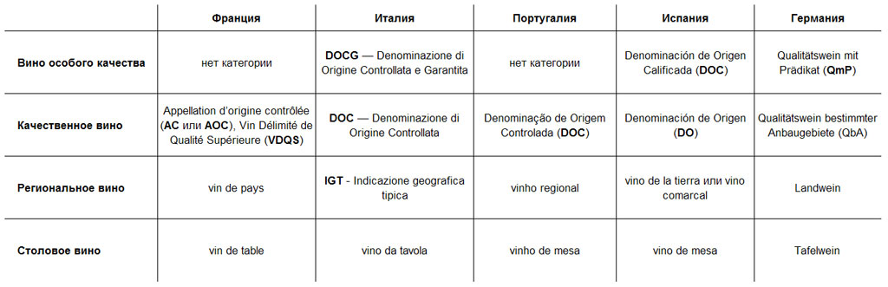 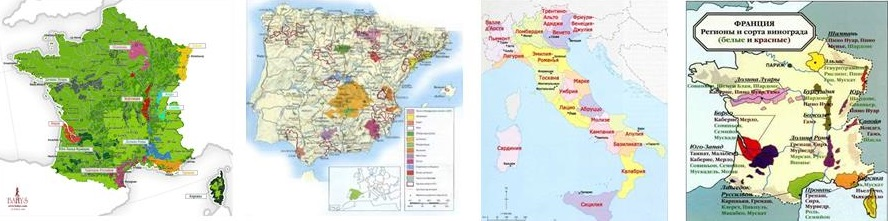Правила выбора вин в магазине
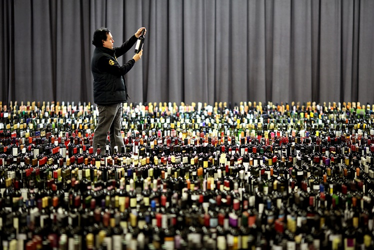Винная этикетка
Винная этикетка – это не просто красивое изображение на бутылке, её смело можно назвать паспортом вина. Так, этикетка может рассказать, из какого винограда сделан напиток, где расположены виноградники, кто его производитель. А, обладая данными сведениями, можно уже получить приблизительное представление о том, что же будет находиться внутри бутылки.
На первый взгляд ничего сложного. И действительно, на многих этикетках все четко обозначено, хотя часто встречаются и такие надписи, которые не всегда понятны.
Немного истории
Винная этикетка берет свои истоки в древние времена. Так, глядя в далекое прошлое, можно увидеть этикетку не как рисунок, а как элемент резьбы. Примечательно, что первыми этикетками можно считать надписи на амфорах и глиняных сосудах, которые использовались римлянами для перевозки вина.
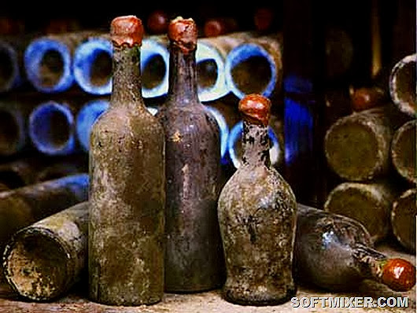Самая древняя винная этикетка, которую удалось найти археологам, датируется 51 годом до нашей эры - на амфоре сохранилась надпись "Lun-Vet/A-III-R/X/M/Valeri Abinnerici / Cornelia" (Старая Луна, возраст три года, красное, производства Валерио Абиннеричи и Корнелия"). В свою очередь, в Северной Европе в этот же период времени для перевозки вина активно использовались бочки, поэтому надписи делались мелом или углем.
Шли годы, и когда стеклянная бутылка стала обычным явлением для виноделия, винная этикетка обрела вид деревянной дощечки или свернутого пергамента, которые привязывали к горлышку бутылки веревкой.
Но по мере выхода из темной эпохи Средних Веков рынок постепенно расширялся и винные бутылки наконец получили этикетку. Важнейшую роль в становлении этого маркетингового хода сыграло знакомство европейцев с великим азиатским изобретением – бумагой. Наносить изображения на бумагу куда проще, нежели на стекло бутылок или на твердое дерево, а уже саму бумагу приклеить к стеклянной поверхности – и вовсе не проблема.
Китай дал для этикеток и еще одну ценную технологию – печать. В восемнадцатом веке в Германии на основе китайских изобретений развитие получила цветная литография, и это подняло искусство этикетки на следующий уровень – полиграфический дизайн.
Теперь этикетки бутылок могли быть стандартными, информативными и, что самое важное, привлекательными для человеческого взгляда. Сейчас трудно представить в продаже бутылку вина, на которой нет никакого изображения или надписи – тем не менее, еще в начале XIX века многие вина даже известных марок имели либо абсолютно «голую» бутылку, либо продавались на разлив в тару покупателя.
Во Франции и на юге Германии полиграфисты выпускали крайне любопытные, монохромные этикетки, в которых указывался сорт вина, а уже производитель должен был от руки оставить запись о себе. Этикетки этой серии скорее напоминали стандартный бланк документа, выпускаемый государственными типографиями, то есть были шрифтовыми, без графических изображений.
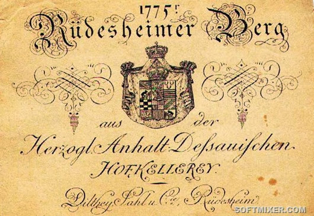Во Франции и на юге Германии полиграфисты выпускали крайне любопытные, монохромные этикетки, в которых указывался сорт вина, а уже производитель должен был от руки оставить запись о себе. Этикетки этой серии скорее напоминали стандартный бланк документа, выпускаемый государственными типографиями, то есть были шрифтовыми, без графических изображений.
Искусство этикетки развивалось и достигло пика в середине XIX века. Это время расцвета романтического искусства и пришедшего ему на смену раннего модернизма. Этикетки не отставали от общей тенденции в искусстве и рисовались весьма изощрёнными. В это время практически мы можем наблюдать полное вытеснение исключительно шрифтовых этикеток, и взамен им появляется изысканная цветная литография с золотым тиснением.
Именно это время в истории этикеточной промышленности без тени сомнения можно отнести к золотому веку художественности в этой отрасли. Печатные матрицы для винных этикеток создавались лучшими художниками фактически вручную, чего уже никогда не было позднее. Помимо этого, ввиду быстрого износа, этикетки не выпускались в тот момент массовыми тиражами. И даже если повторялись, то отнюдь не копировали друг друга, как это происходило в двадцатом веке и сегодня.
А вот с 50-хх годов 20 века большинство винодельческих стран приняли законы, которыми постановили, что этикетка на бутылке вина должна нести как можно больше информации о вине и его производителе. Ввиду этого, большинство виноделов перестали украшать свои вина излишне художественными творениями. Такие правила существуют в мире вина и сегодня.
Прочтение винной этикетки - это момент знакомства с тем или иным вином: умея прочесть необходимую информацию, Вы сможете составить общую картину того, что находится внутри бутылки. Хотя, конечно же, окончательным фактором при выборе вина могут стать личные вкусовые предпочтения и опыт.
Винные этикетки Нового света
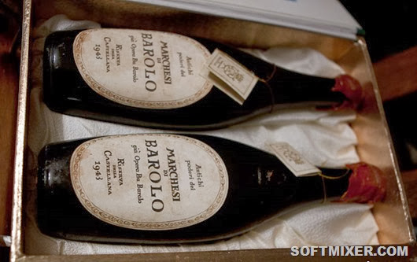Винные этикетки Нового света - самые простые для понимания. Они всегда выполнены на английском языке, который для большинства сегодня является "вторым родным", что существенно облегчает их восприятие. Кроме того, в странах Нового света нет четкой регламентации и классификации вин, что также упрощает восприятие винных этикеток. Как правило, там обозначена следующая информация: сорт винограда, из которого сделано вино, имя производителя, год урожая, а также страна и регион производства.
Примечательно, что некоторые элитные вина Нового света могут быть обозначены по номеру партии, названию виноградника или имени владельца. В таком случае сорт винограда, из которого было произведено вино, необходимо искать на контрэтикетке.
- Название производителя.
- Регион происхождения винограда.
- Сорт винограда (преобладающий сорт указывается первым).
- Винтаж (год сбора урожая).
- Содержание алкоголя на единицу в процентах от объема.
Важно: не так давно Австралия ввела правило обозначать вина из своих лучших виноградников обозначениями Superior и Outstanding. В других странах Нового света официальной классификации качества вина, которое гарантировалось бы на уровне государства, пока нет.
Винные этикетки Европы
Винные этикетки Европы - гораздо сложнее в восприятии, нежели их аналоги из стран Нового Света. Это связано с несколькими факторами: во-первых, все европейские производители изготавливают этикетки для своих вин на государственном языке. То есть, если Вы захотите купить бутылку французского вина, Вам придется разобраться с надписями на французском. Если же Вы пожелаете ознакомиться с винами Италии - Вас ожидают этикетки, полностью исполненные на итальянском.
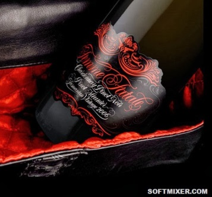Во-вторых, в Европе нет правила печатать название сорта винограда, из которого сделано то или иное вино. Понять, из чего сделан напиток, можно лишь зная регион его производства - чаще всего согласно законодательству винодельческих стран за каждым регионом закреплен определенный сорт (сорта) винограда.
Также отметим, на территории Европы существует классификация вин, которая контролируется и гарантируется на уровне государств. Общий смысл данной классификации состоит в том, чтобы контролировать происхождение винограда. То есть, если Вы покупаете бутылку вина с установленной аббревиатурой, Вы можете быть уверены в том, что данное вино было произведено согласно правилам, определенным на законодательном уровне (виноград был выращен в установленном регионе, соблюдены метод производства и выдержка).
Франция
Французская этикетка очень часто кажется самой сложной для восприятия, поскольку там много обозначений, и все они на французском языке. Хотя, ради справедливости, стоит отметить, не смотря на некоторые сложности, именно этикетка французского вина позволяет потребителю узнать наиболее полную информацию о вине.
- Название вина.
- "Mis en bouteille au château/domain" означает, что вино бутилировано в поместье. Помимо этого обозначения, на этикетках французских вин можно найти: "Mis en bouteille a la propriété" (вино бутилировано по месту его выращивания и производства), а также "Mis en bouteiile dans le région de production" (вино бутилировано в данной географической зоне).
- Классификация виноградников от 1855 года: "Premier Grand Cru Classé" или другие производные от "Cru" - наивысшая категория, означающая лучшие либо самые лучшие виноградники.
- Название аппелясьона (винодельческого региона) - классификация качества и места происхождения. Отметим, согласно французским правилам производства вина именно это название и говорит потребителю сорт винограда, из которого изготовлено вино.
- Адрес производителя.
- Год сбора урожая.
Примечание: в некоторых винах Бордо можно встретить обозначение Grand vin. Как правило, так обозначают главное вино винодельни. Однако это вовсе не означает, что в данной бутылке "великое вино".
Совет: часто, глядя на этикетку вина, можно увидеть замысловатое обозначение Superieur (superior - итальянский вариант). В данном случае приставка "супер" не указывает на качество вина - оно просто сообщает, что вино было выдержано более длительное время и имеет более высокое содержание алкоголя, чем ординарное вино с таким же названием.
Италия
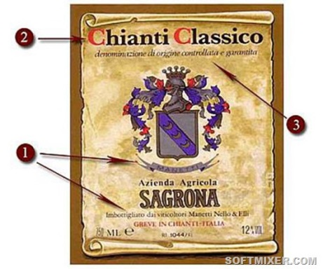Итальянские этикетки во многом схожи с французскими:
- Имя производителя.
- Название региона (в данном случае Кьянти). Приставка "Classico" применяется к винам, которые были произведены в исторической части данного региона.
- DOCG (Denominazione di Origine Controllata e Garantita) - наивысшая квалификация итальянских вин по географическому происхождению.
Примечание: Reserva означает, что вино было выдержано более длительное время в дубовых бочках, чем ординарное вино с таким же названием.
Испания
Что касается этикеток вин Испании, хотелось бы отметить основную отличительную черту. Так, на них обязательно указывается длительность выдержки вина, которая строго регламентируются законом.
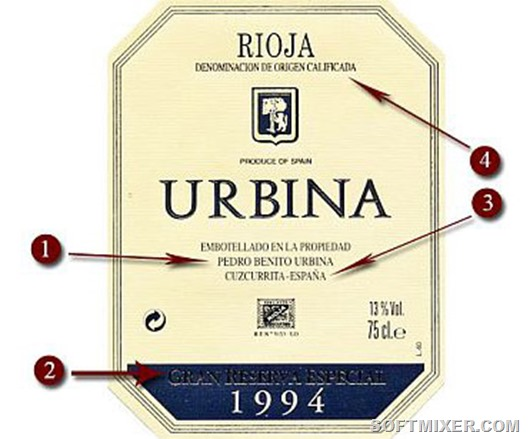- Имя производителя.
- Gran Reserva означает, что вино выдерживалось в течение 5 лет - из них 2 года в бочках.
- Название региона, где было произведено вино.
- Denominación de Origen Calificada - название наименования по географическому происхождению.
Примечание: классификация выдержки испанских вин: Crianza - 2 года, из них 6 месяцев в бочках; Reserva - 3 года, из них 12 месяцев в бочках; Gran Reserva - 5 лет, из них 2 года в бочках.
Германия
На этикетках немецких вин помимо классификации по региону, как это принято в Европе, указывается также классификация по уровню содержания сахара в вине, а также спелости винограда.
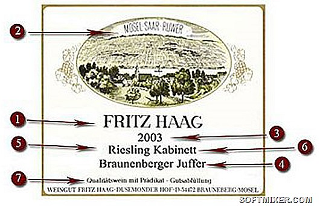- Название производителя.
- Регион происхождения вина.
- Винтаж (винодельческий термин, означающий выдержку вина или урожай определенного года и возраста).
- Деревня и виноградник.
- Сорт винограда.
- Степень зрелости винограда.
- Общая классификация качества вина.
Примечание: Qualitatswein mit Pradicat (высшая категория немецкого вина) делится на шесть разных стилей, определяемых уровнем спелости винограда:
Kabinett - самое легкое вино категории QmP, как правило, полусладкое (если не имеет других обозначений);
Halbtroken - полусухое вино;
Spatlese (позднего сбора) - чаще всего сладкие вина, хотя встречаются и сухие, а также полусухие;
Auslese (отборное) - вина из отборных гроздьев очень спелого винограда. Зачастую сладкие, бывают и сухими;
Beerenauslese (отборные ягоды) - сладкие вина, из отборных гроздьев винограда, пораженного грибком благородной плесени;
Trockenbeerenauslese (увядшие отборные ягоды) - сладкие вина из отборных гроздьев винограда, увядших под воздействием благородной плесени;
Eiswein (ледяное вино) - вино из замороженного винограда, который собирают зимой.
Этикет употребления вина
Собираете ли Вы дружескую вечеринку, устраиваете ли прием или занимаетесь организацией фуршета, Вам не обойтись без знания правил этикета, особенно в том, что касается подачи и употребления алкогольных напитков. Этикет – это своеобразный «код» высшего уровня, согласно которому Ваши гости будут оценивать мероприятие. Несмотря на то, что некоторые правила этикета понятны интуитивно, а другие могут показаться условностями, отдайте дань этим правилам. Соблюдение норм этикета неизменно оставит о Вас хорошее впечатление, продемонстрирует уважение к гостям, и, конечно, сделает Ваше мероприятие эталоном хорошего вкуса. Особенно, если это официальный прием, от которого зависит многое, если не все – репутация Вашей компании или Ваша личная репутация.
Температура подачи вин
Специалистам известно, что щепетильность в выборе температуры вина не является выражением излишней педантичности и ненужного эстетизма. От температуры подачи зависит очень многое - сможет ли вино полноценно раскрыть свой вкус и букет, или покажется неожиданно безвкусным или безнадежно танинным. Если подходить к вопросу со всей серьезностью, то выяснится, что каждый сорт вин требует определенной температуры подачи (подробнее об этом – в статье Температура подачи вин). Традиционно красные вина подаются при температуре 16-18 градусов, причем считается, что чем насыщеннее, полнее и выдержаннее вино, тем выше должна быть температура напитка. Оптимальная температура подачи белых вин находится в пределах 14-16 градусов. Это позволит вину раскрыть свои ноты и аромат в лучшем виде.
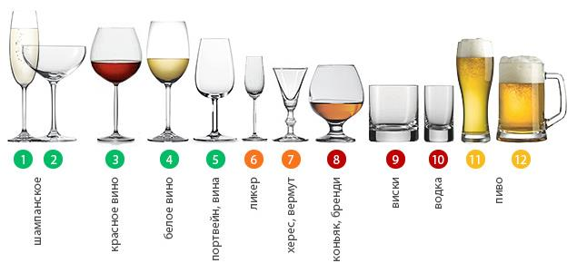При необходимости охладить вино или подогреть его, некоторые сомелье советуют положить бутылку вина ненадолго в холодильник, при этом стоит учесть, что каждые 8-10 минут она охладится на 2 градуса. И точно также вынутое из холодильника вино нагревается на 2 градуса каждые 8-10 минут. Используя этот маленький профессиональный секрет, Вы сможете оптимально рассчитать необходимую температуру напитка. Но не храните вина в холодильнике долгое время – воздействие вибрации может разрушить букет напитка!
Открывая вина, учитывайте их индивидуальные особенности. Красное вино лучше раскроется, если дать ему подышать – подержать вино открытым какое-то время перед тем, как подавать его к столу. Достаточно будет оставить такое вино открытым при комнатной температуре воздуха в течение часа. Белые вина, как правило, открываются непосредственно перед застольем.
Подача вина
Абсолютным моветоном считается подача вина в пластиковых или непрозрачных стаканах. Ведь помимо эстетической функции, бокалы для вина помогают раскрытию вкуса и аромата напитка – вино, плещущееся в стеклянном бокале, подарит настоящее наслаждение не только гурману, но даже начинающему ценителю! Белые вина подают в высоких и тонких бокалах, красные – в широких и полных, ведь красное вино должно «дышать», чтобы полностью раскрыть себя.
Наполняйте бокалы на 1/3 – 2/3 их объема. При этом игристые и белые вина наливают в бокал по стенке, слегка его наклонив, чтобы сохранить структуру напитка, а вот красные вина лучше наливать в центр бокала, чтобы заставить вино «задышать», насытиться кислородом и отдать всю полноту вкуса.
Вино как подарок
Как гость, Вы можете принести вино на обед или ужин, но не стоит воспринимать как личную обиду, если бутылка так и не будет открыта в ходе застолья. Хозяин или хозяйка вечера наверняка подобрали вина к соответствующим блюдам, и не факт, что Ваше вино составит идеальную компанию еде, не вызвав эногастрономической дисгармонии. Некоторые эксперты советуют даже избегать дарения вин в охлажденном виде, чтобы не создавать намек на то, что подарок стоит открыть прямо сейчас – в западном обществе подобные намеки воспринимаются как моветон или указание на то, что хозяин или хозяйка вечера не в силах подобрать достойное вино к столу.
Открытие вина
После открытия бутылки продемонстрируйте гостям этикетку. Что касается угощения, то правила нормируют угощать гостей, в зависимости от их статуса или возраста. Первым угощается самый дорогой или старший гость, после него вино наливают в бокалы дамам, а затем мужчинам. После наполнения каждого бокала, горлышко бутылки протирается салфеткой, чтобы случайно не уронить каплю на скатерть или одежду гостя.
Когда все приготовления закончены
После соблюдения всех правил этикета, перечисленных выше, Вы сможете вздохнуть спокойно. Если не будете мучимы вопросом как, а именно а за какую часть, согласно правилам этикета, правильнее держать бокал. Сомнения развеет правило двойной нормы. Подобно тому, как Вы можете свободно употреблять слово «кофе» равно как в мужском, так и в среднем роде, Вы можете держать бокал, как за ножку, так и за его более выпуклую часть. Приемлемы оба варианта, хотя мнения экспертов насчет функциональности этих способов разнятся. Держа бокал за ножку, Вы сохраните температуру его содержимого, которую, знающий правила подачи вина, описанные выше, хозяин внимательно продумал. А вот держа бокал как чашу, Вы убережете костюм или вечернее платье Вашей соседки от досадных случайностей и использования пятновыводителя, а также ковер Вашей хозяйки от досадных пятен. Выбирайте позицию удержания бокала исходя из личного удобства.
Цвет, аромат, вкус
Перед употреблением насладитесь приятным цветом настоящего коньяка, медленно вращая поданный вам бокал и наблюдая за тем, как напиток оставляет приятные следы своего присутствия на стекле или хрустале. Затем вдохните запах коньяка, обладающий тремя последовательно сменяющими друг друга нотами: ваниль, цветочно-фруктовая нота и, наконец, так называемый запах времен. Теперь приступайте к медленному распитию, смакуя каждый глоток и впитывая в себя все великолепие переливающегося во рту вкуса и послевкусия.